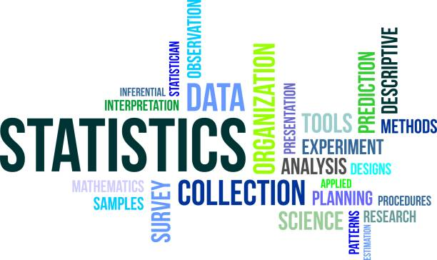
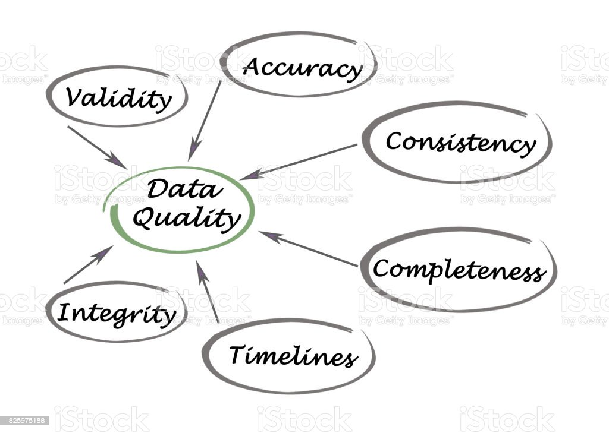

Our Services
All our services are available for you!
Research and Develoment
-

Survey Research
We design and conduct surveys, interviews, focus groups, and other primary research techniques to gather proprietary data tailored to your needs. Through rigorous data analysis and evaluation methodologies, we help organizations measure the outcomes of their projects and programs. -

Artificial Intelligence based Reseach
At Gotera Analytics, we provide cutting-edge artificial intelligence research and development services to create data-driven solutions tailored to clients' needs. Our expertise spans natural language processing, computer vision, predictive analytics, recommendation systems, chatbots, and other AI domains. -

Market Research
Through thorough market studies, we identify emerging trends, consumer preferences, and competitive landscapes, enabling our clients to stay ahead of the competition.Our commitment to delivering accurate and timely research reports empowers businesses to seize new opportunities, optimize their marketing strategies, and achieve sustainable growth in today's dynamic market environment. -
Business Intelligence
By leveraging our expertise across the full spectrum of business intelligence, from data collection to insights delivery, we empower organizations to use information and analytics to make smarter decisions and operate more efficiently.
Data Analytics & Insights
-

Data Quality Assesment
Through advanced data profiling and validation techniques, we assess the overall quality of your data, helping you gain confidence in the information you rely on for critical decision-making. -

Data Engineering
At Gotera Analytics, we provide specialized data engineering services to help organizations get the most out of their data. Our solutions span the full data lifecycle, from management to analysis and visualization. -
exploratory analysis
Our approach starts with thorough data collection from various sources, including records, surveys, IoT devices and more. Leveraging cutting-edge statistical methods, we explore the data's patterns, distributions, and relationships, uncovering hidden trends and anomalies. -
Predictive Modeling
Our team of skilled data scientists and analysts utilize advanced statistical algorithms and machine learning methods to build predictive models that forecast future trends and behavior.
Training and Consultancy
-

Analytics tools/languages
At Gotera Analytics, we provide comprehensive training programs to equip professionals and organizations with the latest data analytics skills and tools.Our courses cover a wide range of essential tools, including Python, R, SQL, and Excel, among others, to equip participants with the necessary skills to excel in data analysis and interpretation. -
Data Science
Led by industry experts and seasoned data scientists, our courses cover a wide range of topics, including data manipulation, statistical analysis, machine learning algorithms, data visualization, and more. -

ICT training
Alongside our core data analysis offerings, we provide technology training to help clients build critical in-house technical capabilities. Our courses focus on the most in-demand fields like web development, database administration, and network fundamentals. -
Research Methodology
Through training, we cover key aspects of research design, data collection methods, sampling techniques, and data analysis. Participants will learn to critically evaluate research literature, formulate research questions, and develop appropriate research frameworks.